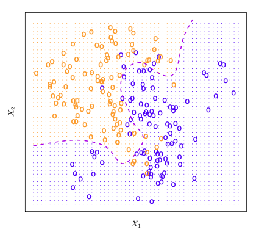
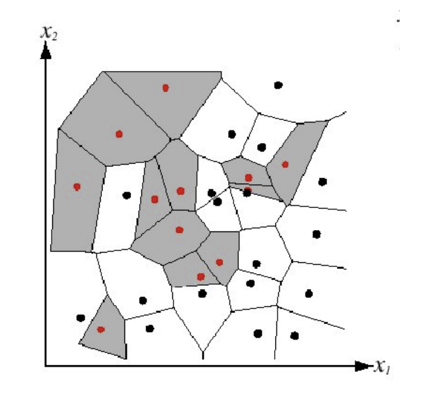
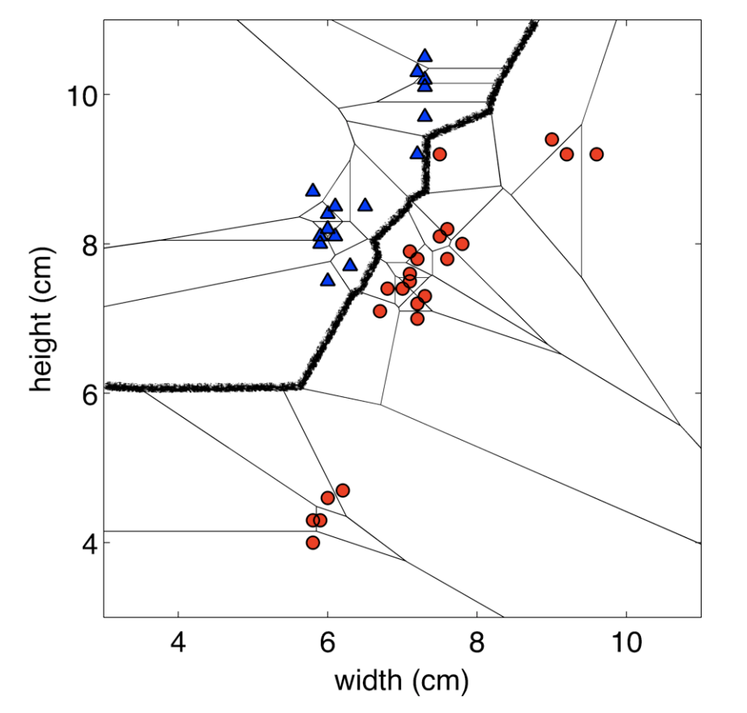
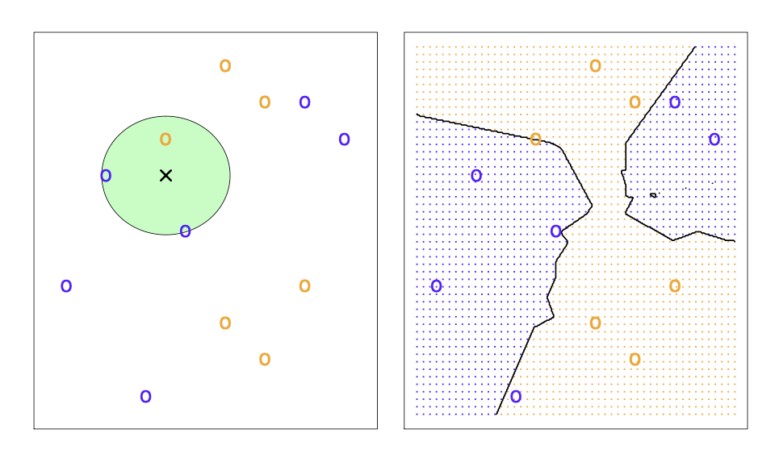
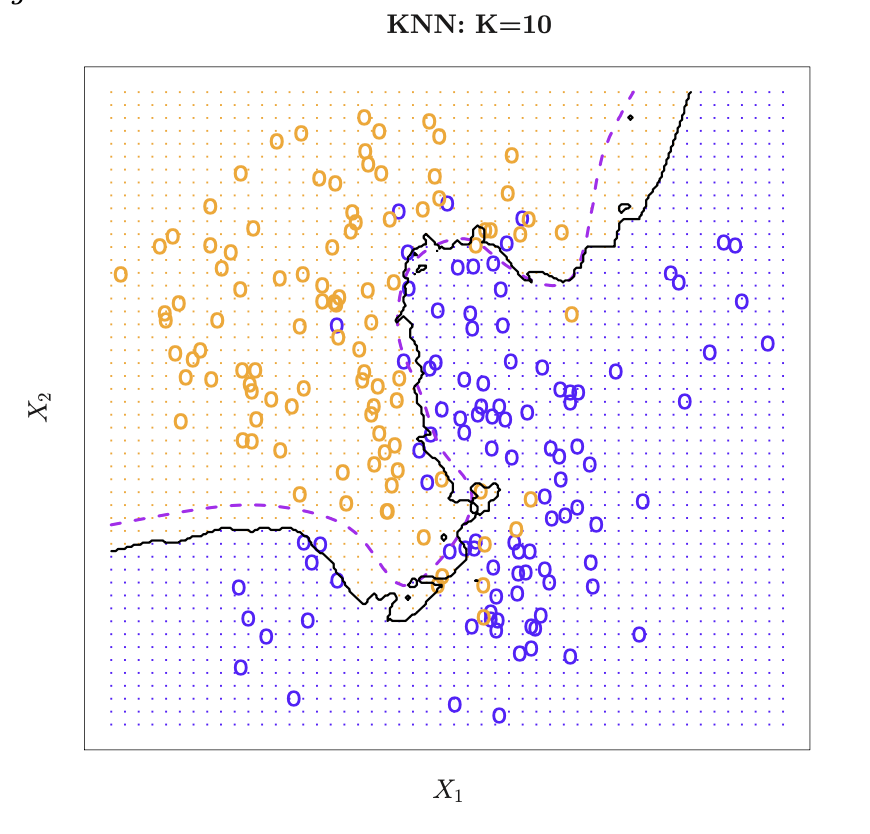
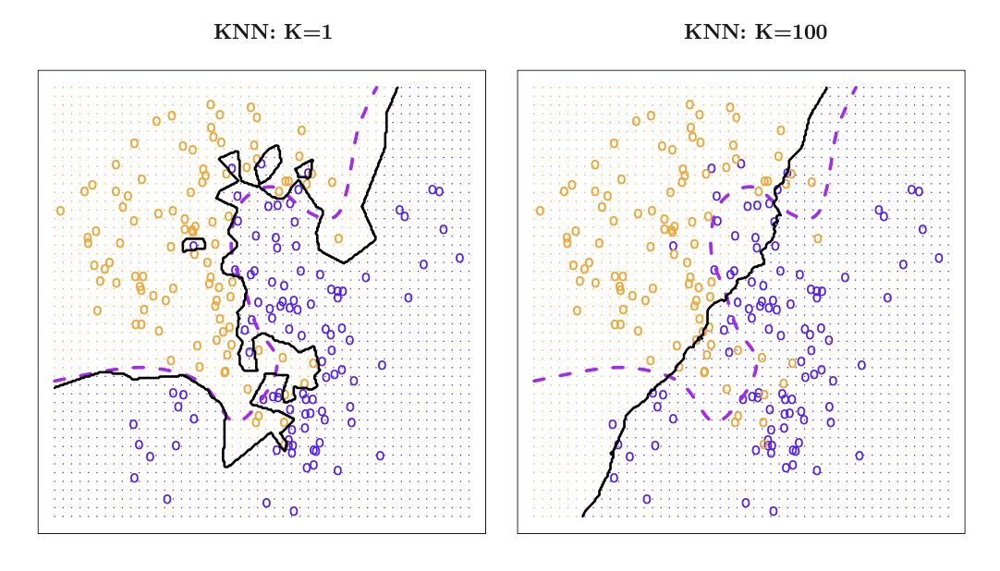
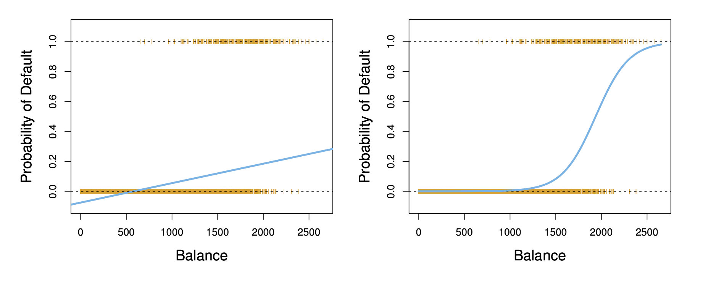
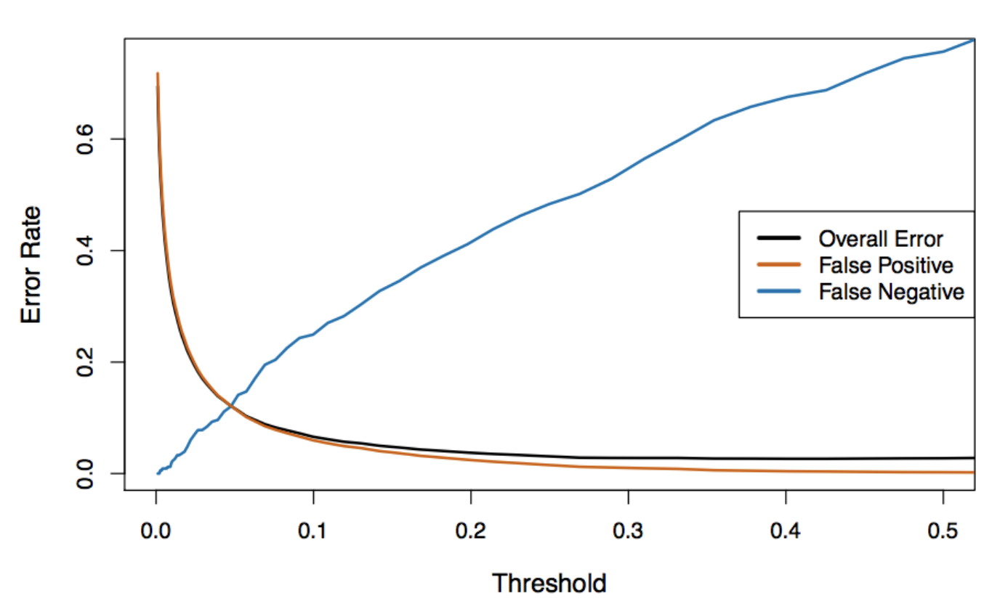
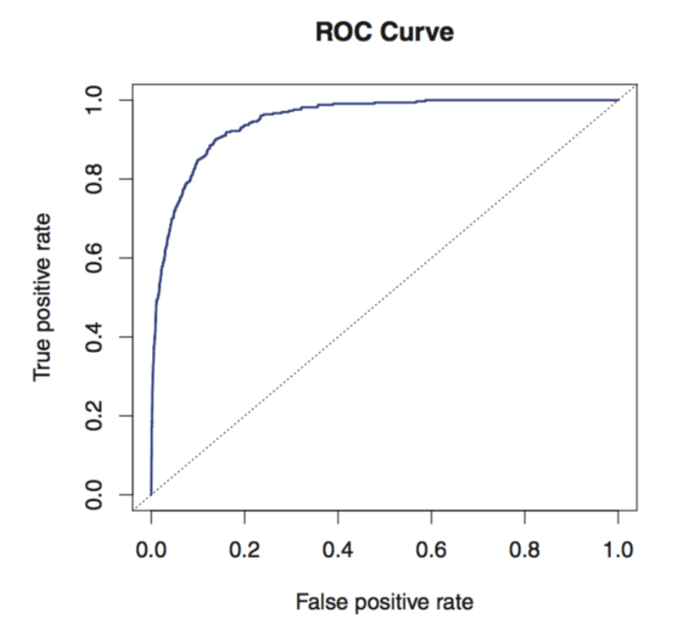

Week 5
A hospital wants to build a model to predict a patient’s recovery time after surgery, measured in days. They have data from 2,000 previous patients and 22 predictors, including:
Exploratory analysis suggests that:
Come up with a modelling plan
By the end of this lecture, you should be able to:
Explain the Bayes classifier and why the Bayes error rate represents the smallest achievable expected classification error.
Describe how kNN performs classification, explain how \(k\) affects model flexibility, and use cross-validation to select \(k\).
Interpret logistic regressioncoefficients and predicted probabilities, and explain how maximum likelihood and gradient descent estimate the model parameters.
Evaluate binary classifiers using a confusion matrix and appropriate performance metrics, and explain how changing the classification threshold affects false positives and false negatives.
The response variable \(Y\) is qualitative: it takes values in a set of class labels \(\mathcal{C}\).
Binary classification: \(|\mathcal{C}|=2\)
Multiclass classification: \(|\mathcal{C}|>2\)
Given training data \(\mathcal{D}_{\mathrm{train}}=\{(x_1,y_1),\ldots,(x_n,y_n)\}\), with \(x_i\in\mathbb{R}^p\) and \(y_i\in\mathcal{C}\), we want to:
Determine whether each scenario is a classification or regressi0on problem.
Let \((X,Y)\) be a new observation independent of the training data. Let us encode the labels as
\[ C = \{0,1,2,...,K-1\}. \]
For any classifier \(\hat f\), we evaluate it based on the expected error rate
\[ \mathbb{E}\!\left[\mathbf{1}\{Y\ne\hat f(X)\}\right]. \]
Question: Which classifier has the smallest expected error?
In regression, under \(Y=f^*(X)+\varepsilon\), the regression function is the best predictor: for any \(x \in \mathbb{R}^p\),
\[ f^*(x)=\mathbb{E}(Y\mid X=x) =\underset{\widehat{f}(x)}{\arg\min}\;\mathbb{E}\!\left[(Y-\widehat{f}(X))^2\mid X=x\right]. \]
Its MSE is the smallest (i.e. the irreducible error),
\[ \mathbb{E}[(Y - f^*(X))^2] = Var(\epsilon) = \sigma^2 \]
The Bayes classifier (sometimes called Bayes rule) is a function: \(f^*: \mathbb{R}^p \rightarrow C\) that minimizes the expected error rate as
\[ f^*(x)=\underset{\widehat{f}(x)\in C}{\arg\min}\;\mathbb{E}[1\{Y \neq \widehat{f}(X)\}|X=x] \quad \forall x \in \mathbb{R}^p. \] Correspondingly, its expected error rate
\[ \mathbb{E}[1\{Y \neq f^*(X)\}] \]
is called the Bayes error rate which is the smallest.
For any \(x \in \mathbb{R}^p\),
\[ \begin{aligned} f^*(x) &= \underset{\widehat{f}(x)\in C}{\arg\min}\;\mathbb{E}[1\{Y \neq \widehat{f}(X)\}|X=x] \\ &= \underset{\widehat{f}(x)\in C}{\arg\min}\; \mathbb{P}\{Y \neq \widehat{f}(X)|X=x\} \\ &= \underset{\widehat{f}(x)\in C}{\arg\max}\; \mathbb{P}\{Y = \widehat{f}(X)|X=x\} \end{aligned} \]
It is easy to see that
\[ \underset{k\in C}{\arg\max}\; \mathbb{P}\{Y = k|X=x\} \] The Bayes classifier, \(f^*\), is our target to estimate/learn in classification problems.
The Bayes error rate at \(X=x\) is
\[ \begin{aligned} \mathbb{E}[\mathbf{1}\{Y\ne f^*(x)\}\mid X=x] &=\mathbb{P}(Y\ne f^*(x)\mid X=x)\\ &=1-\mathbb{P}(Y=f^*(x)\mid X=x) \\ &=1-\underset{j\in C}{\max}\; \mathbb{P}\{Y = j \mid X=x\} \end{aligned} \]
The Bayes error rate is:
In general, the overall Bayes error rate is given by
\[ 1 - \mathbb{E}\left(\underset{j\in C}{\max}\; \mathbb{P}(y=j \mid X=x) \right) \] where the expectation averages the probability over all possible values of \(X\).
For \(\mathcal{C}=\{0,1\}\), define the conditional probability:
\[p(x)=\mathbb{P}(Y=1\mid X=x),\qquad p:\mathbb{R}^p\to\{0,1\}.\]
The Bayes rule is
\[ f^*(x)= \begin{cases} 1,&p(x)\geq 0.5,\\ 0,&p(x)<0.5. \end{cases} \]
The choice at exactly \(0.5\) is arbitrary: both labels have the same conditional error.

A simulated data set consisting of 100 observations in each of two groups, indicated in blue and in orange. The purple dashed line represents the Bayes decision boundary. The orange background grid indicates the region in which a test observation will be assigned to the orange class, and the blue background grid indicates the region in which a test observation will be assigned to the blue class.
For real data, we do not know the conditional distribution of \(Y\) given \(X\), so computing the Bayes classifier is impossible.
However, we can use the k-Nearest Neighbours approach, which estimates the conditional distribution of \(Y\) given \(X\), and then classifies a given observation to the class with the highest estimated probability.
There are many ways that we can define nearest, but for now we will use the Euclidean distance, i.e.
\[||\mathbf{x_i}-\mathbf{x_{i'}}||_2 = \sqrt{\sum_{j=1}^p (x_{ij} - x_{i'j})^2}\]
Algorithm: 1-NN
Find example \((\mathbf{x}, y)\) (from the training data) closest to \(\mathbf{x^*}\). That is: \[\mathbf{x} = \underset{\mathbf{x_i} \in \{\mathbf{x_1}, ..., \mathbf{x_n}\}}{\arg\min} \text{distance}(\mathbf{x_i}, \mathbf{x^*})\]
Output \(y\) as the label.
We can visualize the behaviour in the classification setting using a Voronoi diagram.
This diagram is a way to divide a space into different regions based on the distance to specific points, thus it’s a good way to visualize what the outcome label of a new point, \(\mathbf{x^*}\) would be.

Decision Boundary: the boundary between regions of the feature space assigned to different categories

Instead of just using the nearest neighbour, we will use the k-nearest neighbours.
Algorithm: k-NN for Classification
Find \(k\) data points \((\mathbf{x_{(1)}}, y_{(1)}), ..., (\mathbf{x_{(k)}}, y_{(k)})\) (from the training data) closest to \(\mathbf{x^*}\). These points are ordered by which are closest to \(\mathbf{x^*}\). These points form a neighbourhood, \(N_k(\mathbf{x})\).
The prediction for a classification problem is majority class among the \(k\) neighbours
\[ \hat{y}^* = \underset{y \in \mathcal{C}}{\arg\max} \sum_{i=1}^{k} \mathbf{1}\{y = y_{(i)}\}, \]
where \(\mathcal{C}\) is the set of possible classes.
Below, the \(k\)NN approach, using \(k=3\), is shown in a simple situation of six blue and six orange observations.

Left: Test observation is the black cross. The three closest points are shown within the green circle. The prediction will be that the test observation belongs to the blue class, since that is the most commonly-occuring class.
Right: \(k\)NN decision boundary is shown in black.

The black curve indicates the \(k\)NN decision boundary on simulated data using K = 10. The Bayes decision boundary is shown as a purple dashed line.
Small \(k\)
Large \(k\)

Balancing \(k\)
Rule of Thumb: Choose \(k\) from \([1, \sqrt{n}]\) via cross-validation.
As we have discussed many times, kNN suffers from the curse of dimensionality!
The saving grade is that some datasets (e.g. images) may have low intrinsic dimension
\(k\)NN can be sensitive to the ranges of different features
A simple fix: standardize each dimension to be zero mean and unit variance.
Caution: depending on the problem, the scale might be important!
Computational cost for classifying test data, per data point (un-modified algorithm)
Depending on the type of dataset, different distance measures will perform better than others.
These distance measures may differ in:
Which of the following statements are true:
Which of the following statements are true:
Consider the following problem. We are trying to predict the medical condition of a patient in the emergency room on the basis of her symptoms.
There are three possible diagnoses: stroke, drug overdose, and epileptic seizure.
We define \(Y\) as follows:
\[ Y = \begin{cases} 1 \quad \text{if stroke}; \\ 2 \quad \text{if drug overdose}; \\ 3 \quad \text{if epileptic seizure}. \end{cases} \] Could we use OLS to fit a linear regressions model to predict \(Y\) on the basis of a set of predictors \(X_1, X_2, ..., X_p\)?
For a binary qualtitative response, the situation is better. Consider that there are only two possibilities for the patient’s medical condition:
\[ Y = \begin{cases} 0 \quad \text{if stroke}; \\ 1 \quad \text{if drug overdose}. \end{cases} \] We could fit a linear regression to this binary response, and predict drug overdose if \(\hat{p}(x) = \hat{Y} > 0.5\) and stroke otherwise
OLS gives fitted values of the form
\[\hat p(x)=\hat\beta_0+\hat\beta_1x_1+\cdots+\hat\beta_px_p.\]
This expression can be less than 0 or greater than 1, even though probabilities must lie in \([0,1]\).
A more tailored approach is needed.

Linear regression can predict probabilities below zero; logistic regression produces predictions in \([0,1]\). The plotted points show the observed 0/1 default outcomes.
How can we estimate \[ p(x) = \mathbb{P}\{Y=1|X=x\} \]
or, more generally,
\[ \mathbb{P}\{Y=k\mid X=x\} \quad \forall k \in C \] for any \(x \in \mathbb{R}^p\)?
These methods make different assumptions about the relationship between predictors and class labels.
For a given classifier \(\hat{f}: \mathbb{R}^p \rightarrow C\), we have
Training 0-1 Error Rate
\[ \frac{1}{n}\sum_{i=1}^n 1\{y_i \neq \hat{f}(x_i)\} \]
Test 0-1 Error Rate when we have the test data \(\{(x_{T_1}, y_{T_1}), ..., (x_{T_m}, y_{T_m})\}\),
\[ \frac{1}{m}\sum_{i=1}^m 1\{y_i \neq \hat{f}(x_{T_i})\} \]
Data splitting based on 0-1 error rate when we don’t have the test data
Logistic regression is a parametric approach that postulates parametric structure on the function \(p: \mathcal{X} \rightarrow [0,1]\).
It is assumed that
\[ p(\boldsymbol{x}) :=p(\boldsymbol{x};\boldsymbol\beta)= \frac{e^{\beta_0+\beta_1x_1+\cdots+\beta_px_p}} {1+e^{\beta_0+\beta_1x_1+\cdots+\beta_px_p}} \quad \forall \boldsymbol{x} \in \mathcal{X} \]
The function \(f(t)=e^t/(1+e^t)\) is the logistic function.
\(\beta_0,\ldots,\beta_p\) are the model parameters.
For finite coefficients and predictor values, \(0<p(\boldsymbol{x})<1\).
\(p(\boldsymbol{x};\boldsymbol\beta)\) is nonlinear in both \(\boldsymbol{x}\) and \(\boldsymbol\beta\).
Rearranging the logistic model gives
\[ \underbrace{\frac{p(x)}{1-p(x)}}_{\text{odds}} =e^{\beta_0+\beta_1x_1+\cdots+\beta_px_p}. \]
\[ \underbrace{\log\left(\frac{p(x)}{1-p(x)}\right)}_{\text{log-odds (logit)}} =\beta_0+\beta_1x_1+\cdots+\beta_px_p. \]
Our interests:
Given estimates \(\widehat{\boldsymbol\beta}=(\widehat\beta_0,\ldots,\widehat\beta_p)\):
\[ \widehat{\text{logit}}(\boldsymbol{x})=\widehat\beta_0+\widehat\beta_1x_1+\cdots+\widehat\beta_px_p. \]
\[ \widehat p(x)=\frac{e^{\widehat\beta_0+\widehat\beta_1x_1+\cdots+\widehat\beta_px_p}}{1+e^{\widehat\beta_0+\widehat\beta_1x_1+\cdots+\widehat\beta_px_p.}}. \]
\[ \widehat y=\begin{cases}1,&\widehat p(x)\geq 0.5,\\0,&\widehat p(x)<0.5.\end{cases} \]
Given training data \(\mathcal D^{\text{train}}=\{(x_i,y_i):i=1,\ldots,n\}\) with \(y_i\in\{0,1\}\), we estimate the parameters by maximizing the likelihood of \(\mathcal D^{\mathrm{train}}\).
The maximum likelihood principle: We seek the estimates of parameters such that the fitted probability are the closest to the individual’s observed outcome.
The general steps are:
For the derivation, let us set \(\beta_0 = 0\) such that
\[ p(\mathbf x_i;\boldsymbol\beta)=\frac{e^{\mathbf x_i^\top\boldsymbol\beta}}{1+e^{\mathbf x_i^\top\boldsymbol\beta}}, \qquad 1-p(\mathbf x_i;\boldsymbol\beta)=\frac{1}{1+e^{\mathbf x_i^\top\boldsymbol\beta}}. \]
The data consists of \((\boldsymbol{x_1}, y_1), ..., (\boldsymbol{x}_n, y_n)\), with
\[ y_i \sim \text{Bernoulli}(p(\boldsymbol{x}_i; \boldsymbol{\beta})), \quad 1 \leq i \leq n. \]
The likelihood of each data point \((\boldsymbol{x}_i, y_i)\) at any \(\boldsymbol{\beta}\) is
\[ L(\boldsymbol\beta; \boldsymbol{x}_i, y_i) \propto [p(\mathbf x_i;\boldsymbol\beta)]^{y_i}(1-p(\mathbf x_i;\boldsymbol\beta))^{1-y_i}. \]
with
\[ p(\mathbf x_i;\boldsymbol\beta)=\frac{e^{\mathbf x_i^\top\boldsymbol\beta}}{1+e^{\mathbf x_i^\top\boldsymbol\beta}} \] The \(\propto\) sign means “proportional to”, up to some multiplicative term that does not involve the parameter \(\boldsymbol{\beta}\).
The joint likelihood of all data points is
\[ L(\boldsymbol\beta)=\prod_{i=1}^n [p(\mathbf x_i;\boldsymbol\beta)]^{y_i}(1-p(\mathbf x_i;\boldsymbol\beta))^{1-y_i} \]
Taking logs gives
\[ \begin{aligned} \ell(\boldsymbol\beta) &=\sum_{i=1}^n\left[y_i\log(p(\mathbf x_i;\boldsymbol\beta))+(1-y_i)\log(1-p(\mathbf x_i;\boldsymbol\beta))\right]\\[0.4em] &=\sum_{i=1}^n\left[y_i\log\left(\frac{p(\mathbf x_i;\boldsymbol\beta)}{1-p(\mathbf x_i;\boldsymbol\beta)}\right)+\log(1-p(\mathbf x_i;\boldsymbol\beta))\right]\\[0.4em] &=\sum_{i=1}^n\left[y_i\mathbf x_i^\top\boldsymbol\beta-\log\left(1+e^{\mathbf x_i^\top\boldsymbol\beta}\right)\right]. \end{aligned} \]
How do we maximize the log likelihood
\[ \ell(\boldsymbol\beta)=\sum_{i=1}^n\left[y_i\mathbf x_i^\top\boldsymbol\beta-\log\left(1+e^{\mathbf x_i^\top\boldsymbol\beta}\right)\right]? \]
Recall we would like to solve
\[ \min_{\boldsymbol{\beta}\in\mathbb{R}^p} -\ell(\boldsymbol{\beta}) \]
where
\[ -\ell(\boldsymbol{\beta}) = \sum_{i=1}^{n} \left[ -y_i\mathbf{x}_i^\top\boldsymbol{\beta} + \log\left(1+e^{\mathbf{x}_i^\top\boldsymbol{\beta}}\right) \right]. \]
The gradient at any \(\boldsymbol{\beta}\) is that, for any \(j\in\{1,\ldots,p\}\),
\[ -\frac{\partial\ell(\boldsymbol{\beta})}{\partial\beta_j} = \sum_{i=1}^{n} \left[ -y_i + \frac{e^{\mathbf{x}_i^\top\boldsymbol{\beta}}} {1+e^{\mathbf{x}_i^\top\boldsymbol{\beta}}} \right]x_{ij} \qquad \text{(verify this!)} \]
Therefore, at the \((k+1)\)th iteration, with the learning rate \(\alpha\),
\[ \widehat{\boldsymbol{\beta}}^{(k+1)} = \widehat{\boldsymbol{\beta}}^{(k)} - \alpha\sum_{i=1}^{n} \left[ -y_i + \frac{ e^{\mathbf{x}_i^\top\widehat{\boldsymbol{\beta}}^{(k)}} }{ 1+e^{\mathbf{x}_i^\top\widehat{\boldsymbol{\beta}}^{(k)}} } \right]\mathbf{x}_i. \]
Initialization \(\boldsymbol{\beta}^{(0)}=\mathbf{0}\).
The objective value stops changing: \(\left|\ell(\widehat{\boldsymbol{\beta}}^{(k+1)})-\ell(\widehat{\boldsymbol{\beta}}^{(k)})\right|\) is small, say, \(\leq 10^{-6}\).
The parameter stops changing: \(\left\|\widehat{\boldsymbol{\beta}}^{(k+1)}-\widehat{\boldsymbol{\beta}}^{(k)}\right\|_2\) is small or \(\left\|\widehat{\boldsymbol{\beta}}^{(k+1)}-\widehat{\boldsymbol{\beta}}^{(k)}\right\|_2/\left\|\widehat{\boldsymbol{\beta}}^{(k)}\right\|_2\) is small.
Stop after \(M\) iterations for some specified \(M\), e.g. \(M=1000\).
The negative log-likelihood
\[ J(\boldsymbol\beta)=\sum_{i=1}^n\left[-y_i\mathbf x_i^\top\boldsymbol\beta+\log\left(1+e^{\mathbf x_i^\top\boldsymbol\beta}\right)\right] \]
is convex in \(\boldsymbol\beta\) (check this!).
The MLE, whenever it can be computed, has many nice properties!
\[ \widehat{\boldsymbol\beta}\xrightarrow{P}\boldsymbol\beta\quad\text{as }n\to\infty. \]
\[ \sqrt n(\widehat{\boldsymbol\beta}-\boldsymbol\beta)\xrightarrow{d}N(\mathbf 0,\boldsymbol\Sigma). \]
Limitations include computation, model misspecification, etc.
Let \(\widehat{\boldsymbol{\beta}}\) be the MLE of \(\boldsymbol{\beta}\).
The Z-statistic is similar to the t-statistic in regression, and is defined as
\[ \frac{\widehat{\beta}_j} {\operatorname{SE}(\widehat{\beta}_j)}, \qquad \forall j\in\{0,1,\ldots,p\}, \]
where \(\operatorname{SE}(\widehat{\beta}_j)\) is the estimated asymptotic standard error of \(\widehat{\beta}_j\), equal to \(\sqrt{\widehat{\Sigma}_{jj}/n}\) using the notation in the previous slide.
It produces a p-value for testing the null hypothesis
\[ H_0:\beta_j=0 \qquad \text{vs.} \qquad H_1:\beta_j\neq0. \]
A large absolute value of the z-statistic or a small p-value indicates evidence against \(H_0\).
We want to predict a customer’s probability of default using student status.
Define
\[ x_i=\begin{cases}1,&\text{customer }i\text{ is a student},\\0,&\text{otherwise},\end{cases} \qquad y_i=\begin{cases}1,&\text{customer }i\text{ defaults},\\0,&\text{otherwise}.\end{cases} \]
Fit the logistic model
\[ Y_i\mid x_i\sim\operatorname{Bernoulli}(p_i),\qquad p_i=\frac{e^{\beta_0+\beta_1x_i}}{1+e^{\beta_0+\beta_1x_i}}. \]
\[ \log\left(\frac{p_i}{1-p_i}\right)=\beta_0+\beta_1x_{i1}. \]
The fitted maximum likelihood estimates of \(\beta_0\) and \(\beta_1\) satisfy:
| Term | Coefficient | Std. error | Z-statistic | P-value |
|---|---|---|---|---|
| Intercept | -3.5 | 0.071 | -49.55 | <0.0001 |
| Student (Yes) | 0.405 | 0.115 | 3.52 | 0.0004 |
Using the rounded coefficients:
\[ \widehat p(x=1)=\hat{\mathbb{P}}(\text{default}\mid\text{student})=\frac{e^{-3.5+0.405}}{1+e^{-3.5+0.405}}\approx0.043, \]
\[ \widehat p(x=0)=\hat{\mathbb{P}}(\text{default}\mid\text{non-student})=\frac{e^{-3.5}}{1+e^{-3.5}}\approx0.029. \]
Now include balance (\(X_1\)), income in thousands of dollars (\(X_2\)), and student status (\(X_3\)):
\[ \log\left(\frac{p_i}{1-p_i}\right)=\beta_0+\beta_1x_{i1}+\beta_2x_{i2}+\beta_3x_{i3}. \]
| Term | Coefficient | Std. error | Z-statistic | P-value |
|---|---|---|---|---|
| Intercept | -10.87 | 0.492 | -22.08 | <0.0001 |
| Balance | 0.006 | 0.0002 | 24.74 | <0.0001 |
| Income (thousands) | 0.003 | 0.0082 | 0.37 | 0.712 |
| Student (Yes) | -0.647 | 0.2362 | -2.74 | 0.0062 |
Question: How does the student coefficient change?
Several metrics can evaluate a classifier.
The most common is classification accuracy:
\[ \operatorname{Accuracy}=\frac{\text{number of correct predictions}}{\text{number of observations}}. \]
For binary classification, there are a few more we can use.
Classify default using credit card balance and student status.
The confusion matrix of fitted logistic regression:
| Predicted default | Actual No | Actual Yes | Total |
|---|---|---|---|
| No | 9,644 | 252 | 9,896 |
| Yes | 23 | 81 | 104 |
| Total | 9,667 | 333 | 10,000 |
The training error rate is
\[ \frac{23+252}{10000}=2.75\%. \]
The positive class is default.
| Predicted default | Actual No | Actual Yes | Total |
|---|---|---|---|
| No | 9,644 | 252 | 9,896 |
| Yes | 23 | 81 | 104 |
| Total | 9,667 | 333 | 10,000 |
\[ \operatorname{FPR}=\frac{\operatorname{FP}}{\operatorname{TN}+\operatorname{FP}}=\frac{23}{9667}\approx0.24\%. \]
\[ \operatorname{FNR}=\frac{\operatorname{FN}}{\operatorname{TP}+\operatorname{FN}}=\frac{252}{333}\approx75.7\%. \]
A credit card company trying to identify high-risk customers misses most customers who default.
Question: How could we modify the classifier to lower its false negative rate?
The current rule uses a threshold of \(0.5\):
\[ \widehat y_i=\begin{cases} 1\;\text{(default)},&\widehat p(x_i)\geq0.5,\\ 0\;\text{(non-default)},&\widehat p(x_i)<0.5. \end{cases} \]
We want fewer actual defaults to receive a non-default prediction.
To lower FNR, classify an observation as positive when
\[ \widehat p(x)\geq t \]
for a lower threshold \(0\leq t<0.5\).
Varying the threshold changes the balance between false positives and false negatives.

The ROC curve plots FPR against TPR \(=1-\operatorname{FNR}\) across thresholds.

The overall performance of a classifier, summarized over all threshholds, is given by the area under the curve (AUC). High AUC is good.
| Actual class | Predicted negative | Predicted positive | Total |
|---|---|---|---|
| Negative | TN | FP | \(N\) |
| Positive | FN | TP | \(P\) |
| Metric | Definition | Other name |
|---|---|---|
| False positive rate | \(\operatorname{FP}/N\) | \(1-\text{specificity}\) |
| True positive rate | \(\operatorname{TP}/P\) | Sensitivity, recall |
| Specificity | \(\operatorname{TN}/N\) | True negative rate |
| Positive predictive value | \(\operatorname{TP}/(\operatorname{TP}+\operatorname{FP})\) | Precision |
| Negative predictive value | \(\operatorname{TN}/(\operatorname{TN}+\operatorname{FN})\) | NPV |
The denominators distinguish metrics that condition on the actual class from those that condition on the predicted class.
The Bayes classifier assigns each observation to the most probable class. Its expected error rate is the smallest possible, but the true conditional probabilities are usually unknown.
kNN estimates class probabilities using nearby training observations. Choosing \(k\) balances flexibility and stability; scaling and dimensionality also affect performance.
Logistic regression models the log-odds as a linear function of predictors. We estimate its coefficients by maximum likelihood using iterative optimization, then convert fitted probabilities into class labels.
Classifier evaluation requires more than overall accuracy. Confusion-matrix metrics reveal different errors, changing the threshold trades false positives against false negatives, and ROC curves summarize this trade-off across thresholds.
Announcements:
Next Class: Multiclass logistic regression + Linear discriminant analysis